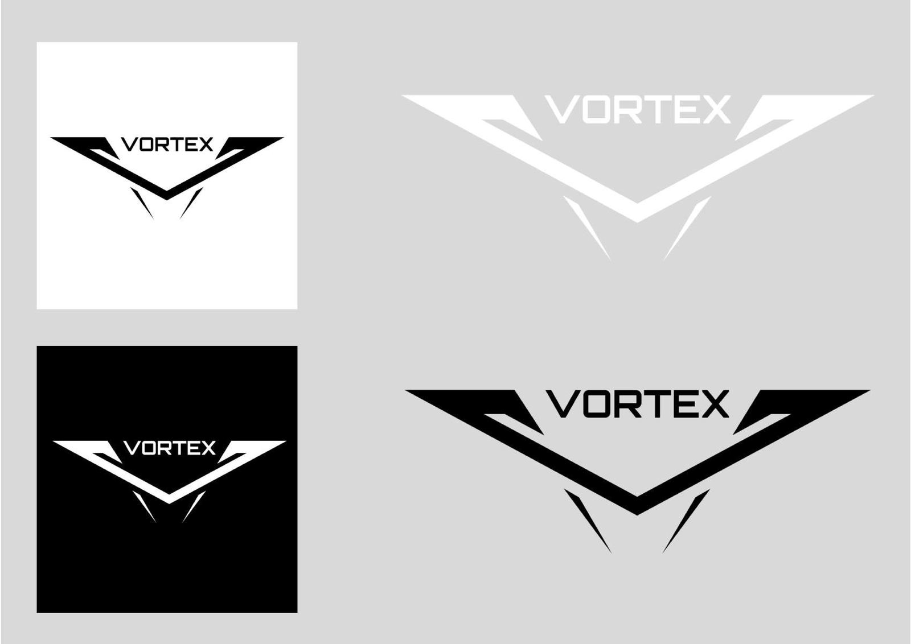
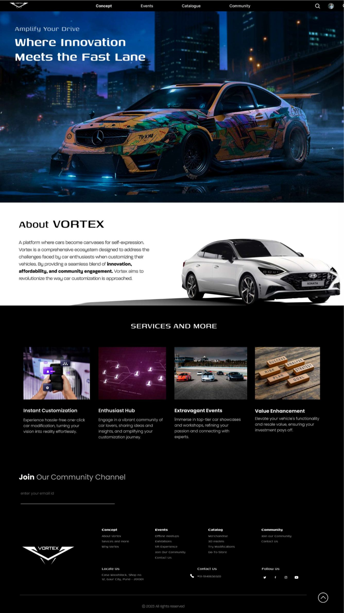
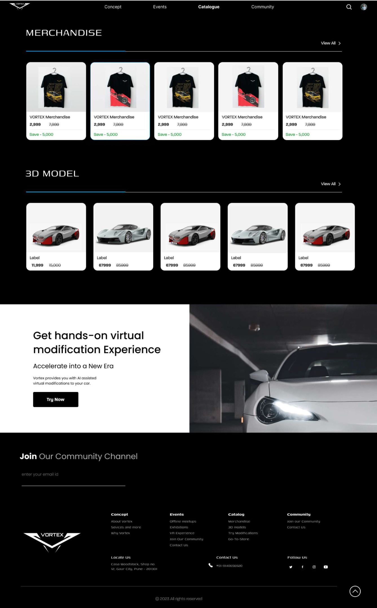
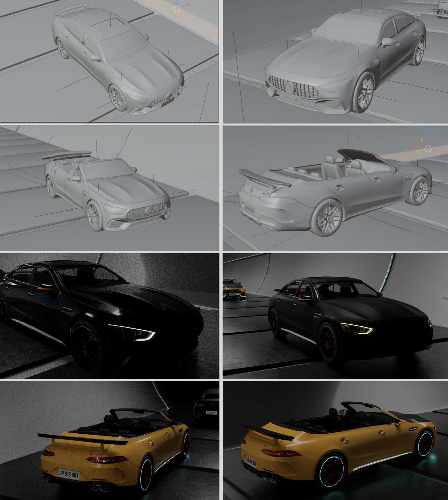
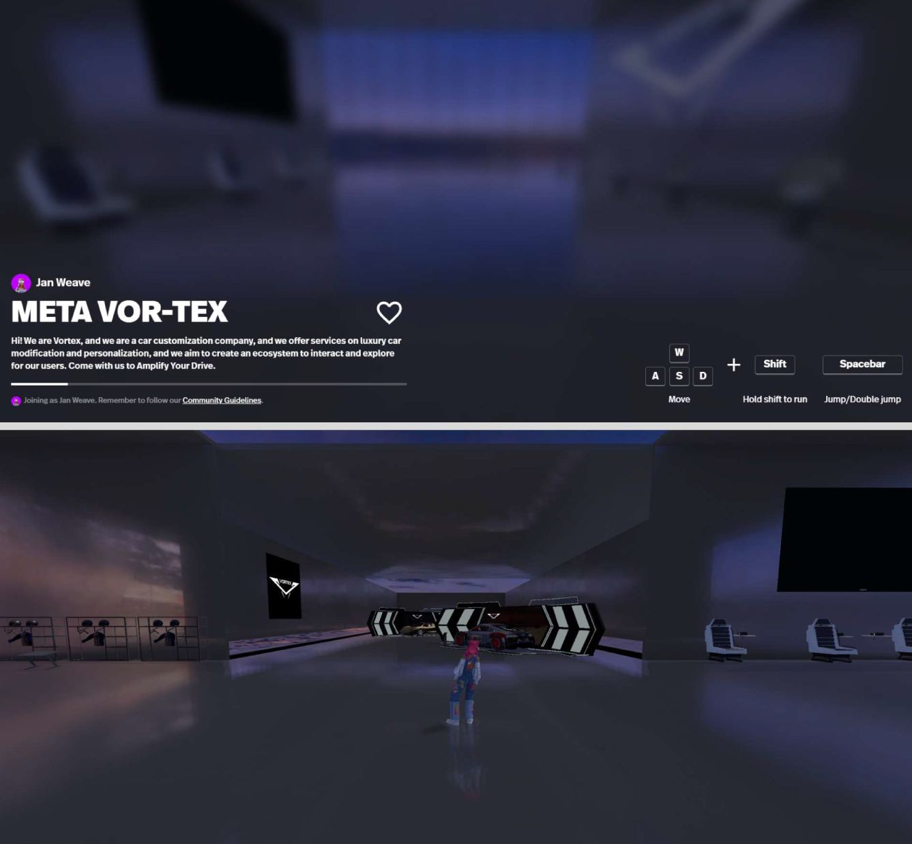

↗ Open full size
Vortex is a car modification brand operating across three separate customer touchpoints a website, a catalogue and a metaverse showroom. Each had been built independently, resulting in disconnected visual languages, inconsistent brand expression and a fragmented customer journey that undermined the premium positioning the brand was trying to establish.
Car modification is a deeply identity driven industry. Customers aren't just buying parts they're expressing who they are through their vehicles. A brand whose own identity is incoherent cannot credibly serve that aspiration.
The challenge was to create a single coherent design system that could be expressed differently across three very different contexts while remaining unmistakably Vortex.
The Vortex identity was built around the concept of controlled power the visual tension between precision engineering and raw performance that defines great car modification. The logo mark evolved through several iterations to achieve a form that reads as both aerodynamic and authoritative: a sharp downward pointing V form with angular wing elements, referencing both speed and structural strength.
The dark colour system near blacks with sharp accent lines was to reflect both the workshop environment where modification happens and the showroom context where results are revealed. The mark works equally across dark and light backgrounds with no loss of impact.

Full logo system mark on white, reversed on black, standalone wordmark at display scale and application contexts. The angular V-form with wing geometry references aerodynamic design while reading immediately at small sizes.
The website serves as Vortex's primary informational and community touchpoint. The hero experience communicates premium positioning immediately — a dramatically lit modified car against a cinematic cityscape, with the tagline "Amplify Your Drive / Where Innovation Meets the Fast Lane" establishing the brand's aspirational tone.
The information architecture separates two user modes without creating two separate experiences: enthusiasts who want technical depth and community connection and new visitors who need orientation before they can engage with the catalogue or metaverse.

Homepage — hero banner "Where Innovation Meets the Fast Lane", About VORTEX section positioning the platform as a comprehensive customisation ecosystem, four service pillars (Instant Customisation, Enthusiast Hub, Extravagant Events, Value Enhancement), community email capture and full navigation footer.
The catalogue touchpoint handles the transactional layer of the brand — where enthusiasm converts into purchase. The design challenge was maintaining visual richness (dark backgrounds, dramatic car imagery) while still being scannable and shoppable. The catalogue navigation (Concept · Events · Catalogue · Community) mirrors the website, giving the user a sense of continuous spatial movement through the same brand rather than jumping between disconnected pages.

Catalogue page — merchandise (branded t-shirts, ₹2,999 / ₹7,000 save ₹5,000), 3D car model listings (₹11,999–₹67,999), virtual modification experience CTA "Get hands-on virtual modification Experience", and community channel sign-up. Consistent dark system maintains brand integrity through the transactional layer.
Supporting the virtual modification experience required building actual 3D assets. I modelled and rendered car variants showing the full progression from grey wireframe model to final textured render — demonstrating how a vehicle transforms through the Vortex modification process. The renders show both closed and convertible configurations, and the colour range customers can select (matte black, metallic black, gold/yellow).

3D model progression — grey mesh wireframe (top row), high-fidelity render in matte black with orange accent lines (middle row) and final textured gold/yellow convertible variants (bottom row). Built to populate the catalogue and provide the metaverse showroom with interactive vehicle assets.
The third touchpoint pushes beyond screen design into spatial experience. The MetaVOR-TEX is a 3D navigable environment where customers can walk through a virtual showroom, see modified vehicles at scale and experience the brand atmosphere before making a physical modification commitment. This addresses the single biggest barrier in car modification: the difficulty of visualising what your vehicle will actually look like before spending significant money on it.
Navigation follows standard spatial controls (WASD to move, Shift to run, Spacebar to jump), making the experience accessible to anyone familiar with games. The Vortex logo and brand elements appear on virtual screens and in the space's architecture.

Meta VOR-TEX — WASD spatial navigation, user avatar (Jan Weave) entering the showroom, Vortex logo on virtual screens, car displayed on central showroom platform with dramatic lighting. The spatial environment extends the brand's "Amplify Your Drive" positioning into an immersive pre-purchase experience.
Working across three very different design contexts — 2D web, transactional catalogue and 3D spatial design in a single project significantly broadened my understanding of how design systems need to be flexible enough to translate across media while maintaining identity integrity.
The Vortex project demonstrated that brand coherence is not an aesthetic luxury but a functional requirement. Customers who encounter a brand consistently across touchpoints are more likely to trust it with high value, high involvement decisions and car modification is exactly that kind of decision.